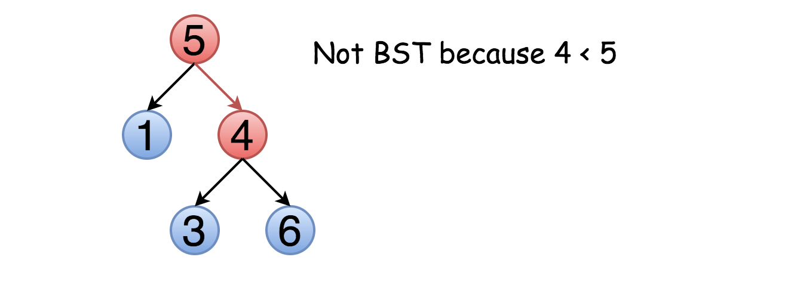
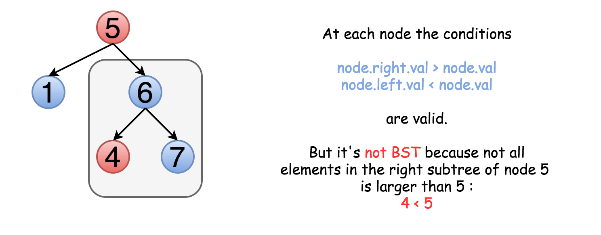

思路很简单，利用搜索二叉树的定义，界定好树的上下界，然后递归比较就好。
Given a binary tree, determine if it is a valid binary search tree (BST).
Assume a BST is defined as follows:
-
The left subtree of a node contains only nodes with keys less than the node’s key.
-
The right subtree of a node contains only nodes with keys greater than the node’s key.
-
Both the left and right subtrees must also be binary search trees.
Example 1:
2 / \ 1 3 Input: [2,1,3] Output: true
Example 2:
5
/ \
1 4
/ \
3 6
Input: [5,1,4,null,null,3,6]
Output: false
Explanation: The root node's value is 5 but its right child's value is 4.
1
2
3
4
5
6
7
8
9
10
11
12
13
14
15
16
17
18
19
20
21
22
23
24
25
26
27
28
29
30
31
32
33
34
35
36
37
38
39
40
41
42
43
44
45
46
47
48
49
50
51
52
53
54
55
56
57
58
59
60
61
62
63
64
65
66
67
68
69
70
71
72
73
74
75
76
77
78
79
80
81
82
83
84
85
86
87
88
89
90
91
92
93
94
95
96
97
98
99
100
101
102
package com.diguage.algorithm.leetcode;
import com.diguage.algorithm.util.TreeNode;
import java.util.Arrays;
import java.util.Objects;
import static com.diguage.algorithm.util.TreeNodeUtils.buildTree;
/**
* = 98. Validate Binary Search Tree
*
* https://leetcode.com/problems/validate-binary-search-tree/[Validate Binary Search Tree - LeetCode]
*
* Given a binary tree, determine if it is a valid binary search tree (BST).
*
* Assume a BST is defined as follows:
*
* * The left subtree of a node contains only nodes with keys *less than* the node's key.
* * The right subtree of a node contains only nodes with keys *greater than* the node's key.
* * Both the left and right subtrees must also be binary search trees.
*
* .Example 1:
* [source]
* ----
* 2
* / \
* 1 3
*
* Input: [2,1,3]
* Output: true
* ----
*
* .Example 2:
* [source]
* ----
* 5
* / \
* 1 4
* / \
* 3 6
*
* Input: [5,1,4,null,null,3,6]
* Output: false
* Explanation: The root node's value is 5 but its right child's value is 4.
* ----
*
* @author D瓜哥, https://www.diguage.com/
* @since 2020-01-24 19:06
*/
public class _0098_ValidateBinarySearchTree {
/**
* Runtime: 1 ms, faster than 33.82% of Java online submissions for Validate Binary Search Tree.
*
* Memory Usage: 45.2 MB, less than 5.58% of Java online submissions for Validate Binary Search Tree.
*/
public boolean isValidBST(TreeNode root) {
if (Objects.isNull(root)) {
return true;
}
return isValidBST(root, null, null);
}
private boolean isValidBST(TreeNode root, Integer lower, Integer upper) {
if (Objects.isNull(root)) {
return true;
}
int val = root.val;
if (Objects.nonNull(lower) && val <= lower) {
return false;
}
if (Objects.nonNull(upper) && upper <= val) {
return false;
}
if (!isValidBST(root.left, lower, val)) {
return false;
}
if (!isValidBST(root.right, val, upper)) {
return false;
}
return true;
}
public static void main(String[] args) {
_0098_ValidateBinarySearchTree solution = new _0098_ValidateBinarySearchTree();
boolean r4 = solution.isValidBST(buildTree(Arrays.asList(3, 1, 5, 0, 2, 4, 6, null, null, null, 3)));
System.out.println(r4);
boolean r3 = solution.isValidBST(buildTree(Arrays.asList(10, 5, 15, null, null, 6, 20)));
System.out.println(r3);
boolean r1 = solution.isValidBST(buildTree(Arrays.asList(2, 1, 3)));
System.out.println(r1);
boolean r2 = solution.isValidBST(buildTree(Arrays.asList(5, 1, 4, null, null, 3, 6)));
System.out.println(r2);
}
}